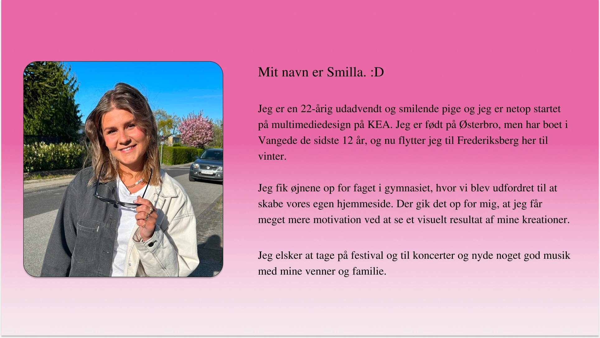
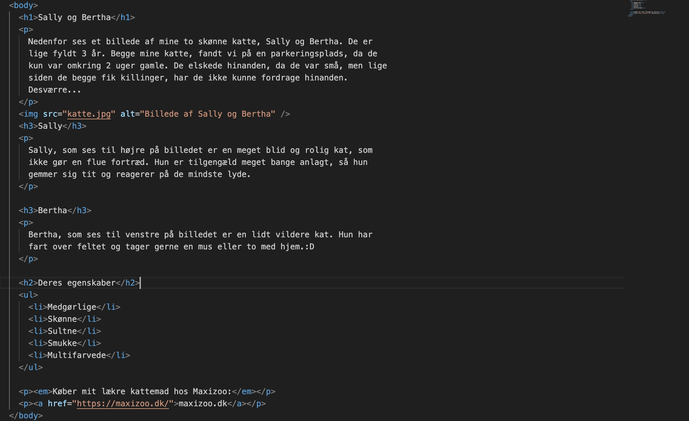

Tema - 2
Grundlæggende Web
Om tema 2
Tema 2 handlede om grundlæggende web, så primært en introduktion til html og css. Ud fra det vi lærte skulle vi lave vores studiestartsprøve, hvor vi skulle kode en hjemmeside med indhold der var blevet givet til os på forhånd.
Vi lærte om hvordan man brugte grid til at style en hjemmeside. Derudover hvordan vi lavede hjemmesiden responsiv, altså at den fungerer både for mobil og desktop, ved hjælp af mediaquaries. Udover dette blev vi introduceret til nyttige værktøjer som Squoosh og Colorbox.
Færdigheder
- Github
- At anvende HTML
- At anvende CSS
- At anvende bruge figma
- At anvende metoder til design af brugergrænseflader
- At anvende grid i HTML
Afleveringer
- 02.01.01a - Visitkortøvelse
- Sæt indhold i HTML
- 02.01.c - 25 bokse
- 02.01.01 - Mobilsite
- Website_v1
- 02.01.f - Grid-layout-1
- 02.01.g - Grid-layout-2
- 02.01.h - Grid-layout-3
- 02.01.i - Grid-layout-4
- 02.01.j - Grid-layout-5
- 02.01.02 Website
02.01.02 Website - Process
Visitkort- og kæledyrsøvelse
Visitkortøvelsen var helt i starten hvor vi lærte at anvende figma og skulle lave en lille kort introduktion af os selv. Vores allerførste kode var et website med en kort introduktion af os selv, hvor vi for første gang blev sat ind i HTML(Hypertext Markup Language). HTML er et standard markup sprog, som bruges til at strukturere en hjemmeside. Vi lærte derfor at sætte en simpel hjemmeside op og sætte indhold og billeder ind. Vi blev derefter sat til at lave en hjemmeside om et kæledyr, for igen at få en forståelse for HTML.
Visitkortøvelse
Visitkort website

Kæledyrsøvelse

HTML
25 bokse øvelser og grid øvelser
Vi blev introduceret til CSS(Cascading Style Sheet), som er et style sheet sprog, som bruges til at style og lave layout til HTML. Her blev vi sat til at lave nogle css øvelser, som hed 25 bokse. Her lærte vi at style tekst, og sætte baggrund og farver på diverse tekster ved hjælpe af farver og fonte. Vi blev også sat direkte ind i nogle grid-øvelser, hvor jeg lærte at lave layout på en hjemmeside og bestemme hvor eksempelvis billederne skulle være.
Alle disse øvelser ledte til vores studiestartsprøve, hvor vi vi fik tildelt given indhold i form af tekst og billeder til siderne, som vi skulle indsætte på en bestemt måde. Har lærte vi at bruge sætte HTML og CSS sammen og rent faktisk udvikle en rigtig hjemmeside.
25 Bokse

Grid øvelser